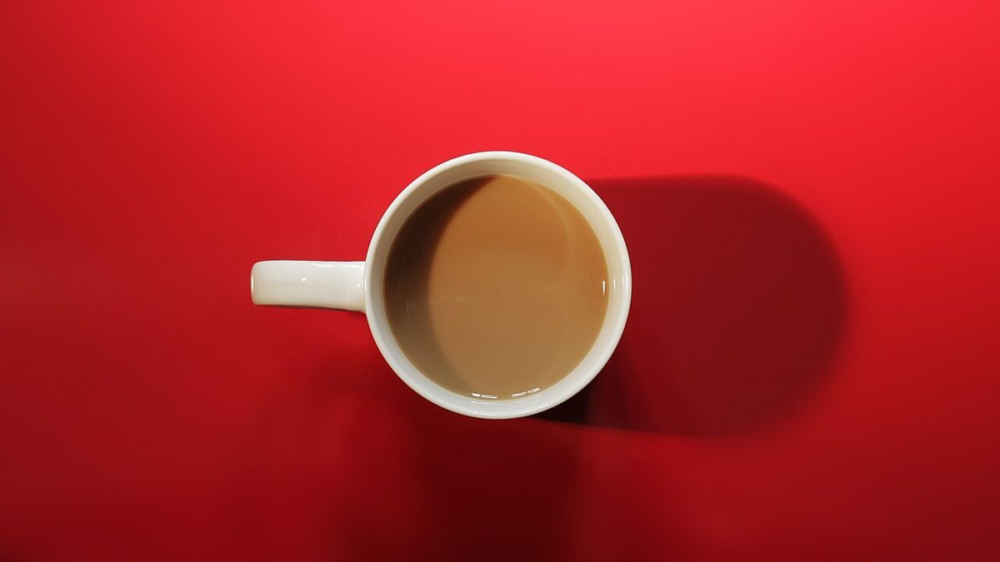

対戦表
対戦表(メニュー)
メニュー・価格は準備中です。下の表は、決まったら入れるための空欄です。
| P1 | P2 | 内容 | ||
|---|---|---|---|---|
| 第1試合 | ?? | VS | ?? | 準備中 |
| 第2試合 | ?? | VS | ?? | 準備中 |
| 第3試合 | ?? | VS | ?? | 準備中 |
| 第4試合 | ?? | VS | ?? | 準備中 |
| 第5試合 | ?? | VS | ?? | 準備中 |
表の中身は何も決まっていません。実際のメニュー・価格は、お店からご提供いただいた内容に差し替えます。

ご案内
メニュー以外のこと
| 所在地 | 〒740-0026 山口県岩国市車町３丁目２１−１０ |
|---|---|
| 電話 | なし |
| 営業時間 | 準備中 |
| 定休日 | 準備中 |
| ご予約 | 準備中 |
| 駐車場 | 準備中 |
| SNS | Instagram @vs1981coffee2025 |